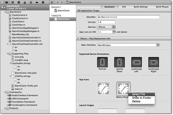
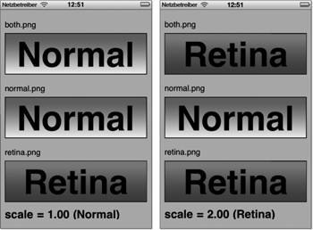
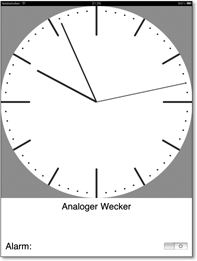

Zum Online-Shop
Zum Online-Shop
3.4 Eine App für alle
Im Springboard erscheint für Ihre App nur ein weißes, abgerundetes Quadrat mit einem Glanzeffekt und dem Namen AlarmClock. Sie können aber auch ein eigenes Icon anzeigen lassen. Das Bild muss im PNG-Format in den folgenden Größen vorliegen:
| Displaytyp | Format | Bemerkung |
| Standard | 57 × 57 Pixel | Notwendig für iPhone und iPod touch |
| Retina | 114 × 114 Pixel | Optional für iPhone und iPod touch mit Retina Display |
| iPad | 72 × 72 Pixel | Notwendig bei iPad-Unterstützung |
Wenn Sie die Dateien icon.png und icon@2x.png nennen, brauchen Sie diese einfach nur zu Ihrem Projekt hinzuzufügen. iOS erkennt diese Dateien automatisch und zeigt sie im Springboard an. Alternativ können Sie die Icons auch über das Target festlegen. Unter dem Tabulator Summary finden Sie zwei Platzhalter, über die Sie per Kontextmenü die App-Icons auswählen können.
Abbildung 3.29 Einfügen der App-Icons
Um die abgerundeten Ecken und den Glanzeffekt in Ihren Icons brauchen Sie sich nicht zu kümmern. Das macht das Springboard für Sie:

Abbildung 3.30 Das App-Icon als Original (links) und im Springboard (rechts)
| Tipp |
|
Vermeiden Sie möglichst Texte in den Icons für Ihre App, da Sie die Icons nicht lokalisieren können (siehe dazu Abschnitt 3.4.2, »Sprachkursus für die App«). |
3.4.1 Das Retina Display
Die neueren iPod-Touch-Modelle und das iPhone 4 besitzen Retina Displays, die gegenüber den Vorgängermodellen die doppelte Auflösung bei gleichen Displaymaßen besitzen. Während die Standarddisplays 320 × 480 Pixel darstellen können, besitzen die Retina Displays eine Auflösung von 640 × 960 Pixeln. Die höhere Auflösung ist also für eine größere Detailgenauigkeit gedacht. Viele UI-Elemente wie beispielsweise Buttons und Labels passt das iOS automatisch an die Auflösung an.
Bei Bildern geht das natürlich nicht automatisch. Hier müssen Sie eine Version des Bildes für die höhere Auflösung bereitstellen. Dazu brauchen Sie das Bild in der doppelten Breite und Länge. Wenn also das Bild in der normalen Auflösung beispielsweise die Größe 124 × 93 Pixel hat, hat das entsprechende Bild für das Retina Display die Größe 228 × 186 Pixel.
Das iOS verwendet die Retina-Version des Bildes automatisch, wenn Sie den gleichen Dateinamen mit dem Zusatz @2x vor der Dateiendung verwenden. Heißt beispielsweise das Bild für die Standardauflösung Bild.png, dann ist der Name für die hohe Auflösung Bild@2x.png. Das gilt für alle Bilder, die Sie über den Interface Builder einem UI-Element zuweisen oder die Sie mit dem Convenience-Konstruktor imageNamed: der Klasse UIImage laden. Sie müssen aber keine Retina-Version bereitstellen. In diesem Fall skaliert Cocoa Touch einfach die normalen Bilder auf die hohe Auflösung.
Das kleine Beispielprojekt Retina auf der beiliegenden DVD soll das Prinzip verdeutlichen. Es enthält zwei Bilder mit unterschiedlichem Inhalt für die beiden Auflösungen, um den Mechanismus zu verdeutlichen. Es gibt jeweils zwei Dateien pro Bild, sodass es insgesamt vier Dateien (both.png, both@2x.png, normal.png und retina@2x.png) gibt. Dabei sollen die beiden letzten Dateien das Verhalten von Cocoa Touch illustrieren, wenn Bildvarianten fehlen. Im Interface Builder oder im Programmcode verwenden Sie aber immer nur die Dateinamen ohne den Zusatz @2x. Die Ausgabe des Beispielprogramms für das Standard- und das Retina Display können Sie in Abbildung 3.31 sehen.
| Die Retina-Auflösung im Simulator |
|
Der Simulator kann sowohl Geräte mit Standard- als auch mit Retina-Auflösung simulieren.
Sie können den Displaytyp über den Menüpunkt Hardware · Gerät umstellen. Auf kleinen Computerdisplays verkleinert der Simulator allerdings das
Ausgabefenster auf die halbe Größe. Das ist zum Testen der höheren Auflösung natürlich
suboptimal. Sie können aber über den Menüpunkt Fenster · Grösse beziehungsweise |
Bei dem Bild both.png verhält sich die App wie beschrieben. Sie verwendet die Datei both.png für die Standardauflösung und both@2x.png für die Retina-Auflösung. Liegt das Bild hingegen nur in der normalen Auflösung vor, verwendet die App für beide Displaytypen das gleiche Bild (Bild normal.png). Das gilt analog für Bilder, die nur in der Retina-Auflösung vorhanden sind (Bild retina.png).
Abbildung 3.31 Ausgabe der App »Retina« für die Standard- und die Retina-Auflösung
Wenn Sie die Displayauflösung im Programmcode unterscheiden wollen, sollten Sie das aber nicht anhand der Displaygrößen machen. Vielleicht bietet Apple ja eines Tages iPhones mit anderen Auflösungen an. Die Anzahl und die Größe der Pixel eines Displays sind ja schließlich zwei vollkommen voneinander unabhängige Werte. Wenn Sie die Displayauflösung ermitteln wollen, können Sie dazu die Methode scale der Klasse UIScreen verwenden. Das Screenobjekt zum Display erhalten Sie über die Klassenmethode mainScreen, sodass Sie den Skalierungsfaktor über [[UIScreen mainScreen] scale] bestimmen können. Auf Standarddisplays hat der Skalierungsfaktor den Wert 1 und auf Retina Displays den Wert 2. Das Beispielprogramm zeigt diesen Wert ebenfalls an.
3.4.2 Sprachkursus für die App
Wenn Sie Ihre App in mehreren Ländern vertreiben möchten, sollte sie zumindest auch englische Texte anzeigen können. Sie müssen also Ihre App lokalisieren. Im Wesentlichen müssen Sie dazu Texte übersetzen und so in Ihr Programm einbauen, dass die App in Abhängigkeit von der gewählten Sprache des Nutzers die richtige Variante anzeigt. Das ist unter iOS nicht so aufwendig, wie es sich vielleicht anhört. Cocoa Touch unterstützt die Lokalisierung bereits – allerdings nur für unterschiedliche Sprachen. Sie können nicht nach Ländern oder Regionen lokalisieren. Sie können also damit keine Variante für österreichisches oder schweizerisches Deutsch erstellen.
In der Wecker-Applikation gibt es drei Stellen, an denen Texte vorkommen können:
- in XIB- und Storyboard-Dateien
- im Programmtext
- im Programmnamen
Bei größeren Projekten müssen Sie häufig auch noch Programmressourcen wie Bilder, Töne oder andere Dokumente lokalisieren. Beispielsweise könnten Sie in der englischen Version der App das Läuten von Big Ben verwenden.
Der Lokalisierungsmechanismus unter Cocoa Touch ist relativ einfach. Für jede Sprache enthält die App einen eigenen Ordner, in dem die Ressourcendateien für die entsprechende Sprache liegen. Sie müssen aber nicht unbedingt alle Ressourcen lokalisieren und auch nicht für jede Sprache eine lokalisierte Variante anlegen. Wenn iOS zu einer Sprache eine Ressource nicht findet, nimmt es die entsprechende Ressource der Standardsprache. Die Standardsprache ist in der Regel Englisch.
Sie können eine Ressource über den Datei-Inspektor in Xcode lokalisieren, indem Sie auf das Pluszeichen unter Localizations klicken. Zuerst legt Xcode nur eine englische Variante an. Durch einen weiteren Klick auf das Pluszeichen können Sie weitere Sprachversionen hinzufügen.
Sobald Sie eine Ressource lokalisiert haben, erscheint vor dem Namen der Ressource in der linken Seitenleiste ein Dreieck, mit dem Sie die Ressource aufklappen können. In der aufgeklappten Ressource finden Sie deren unterschiedliche Sprachvarianten. Sie können die Varianten öffnen und die darin enthaltenen Texte entsprechend anpassen.
Die Texte im Programmcode können Sie auf eine ähnliche Weise anpassen, wobei Sie natürlich keine Varianten der Objective-C-Dateien anlegen. Sie müssen vielmehr Ihren Quelltext geringfügig ändern, sodass die App die Texte auch aus einer Ressource lädt. Dazu schreiben Sie um Ihre Zeichenketten den Makroaufruf NSLocalizedString. Beispielsweise können Sie in Listing 3.38 die Zuweisung für den Nachrichtentext durch folgende Zeile ersetzen:
theNotification.alertBody =
NSLocalizedString(@"Aufwachen", @"Benachrichtigungstext");
Listing 3.43 Lokalisierung eines Textes im Programm
Der erste Parameter enthält den Text, den Sie lokalisieren möchten. Mit dem zweiten Parameter können Sie einen Kommentar angeben, der den Text beschreibt. Weder hat der Inhalt des zweiten Parameters noch die gesamte Änderung eine sichtbare Auswirkung auf Ihr Programm. Wenn eine Benachrichtigung erscheint, zeigt sie immer noch die Meldung »Aufwachen«.
| Tipp |
|
Am besten gewöhnen Sie sich an, um jeden Text einen Aufruf von NSLocalizedString zu schreiben. Dann entsteht Ihnen später bei der Lokalisierung Ihrer App kein zusätzlicher Aufwand für das Einfügen der Makros. Eine mögliche Lokalisierung von Anfang an vorzubereiten ist wenig Mehraufwand. Ein komplexes Projekt im Nachhinein zu lokalisieren ist jedoch das, was der Angelsachse »a pain in the ass« nennt. |
Durch die Verwendung des Makros können Sie jetzt den Text aus einer Ressource laden. Die lokalisierbaren Texte bringen Sie in der Ressourcendatei Localizable.strings unter. Sie können sich diese Datei über das Kommandozeilenprogramm genstrings automatisch erzeugen lassen. Wechseln Sie dazu im Terminalprogramm in den Projektunterordner Ihrer App, wo die Klassendateien liegen. Dort geben Sie den Befehl
genstrings -o en.lproj *.m
ein. Dieser Aufruf erzeugt die Datei Localizable.strings in dem Unterordner en.lproj.
| Hinweis |
|
Der Ordnername für die englische Variante kann entweder en.lproj oder English.lproj sein. Die älteren Xcode-Versionen haben die zweite Variante verwendet. Bei älteren Apps müssen Sie also English.lproj im Befehl verwenden. Überprüfen Sie den Ordnernamen, bevor Sie den Befehl ausführen. Achten Sie auch darauf, ob sich die Lokalisierungsordner im gleichen Verzeichnis wie die Klassendateien befinden. Unter Umständen müssen Sie den Ausgabepfad anpassen (z. B. ../en.lproj). |
Sie erzeugen durch den Aufruf eine Datei Localizable.strings in dem Ordner für die englische Sprachvariante. Diese Datei müssen Sie anschließend noch Ihrem Projekt hinzufügen. Achten Sie dabei aber darauf, dass Sie beim Einfügen die Dateikodierung Unicode (UTF-16) verwenden. Wenn Sie die Datei in Xcode öffnen, sieht sie ungefähr so aus:
/* Dismiss alert */
"OK" = "OK";
/* Benachrichtigungstext */
"Aufwachen" = "Aufwachen";
Listing 3.44 Inhalt einer »Localizable.strings«-Datei
genstrings erzeugt die Kommentare in der ersten und dritten Zeile aus den Kommentarparametern der Makroaufrufe. Die zweite und vierte Zeile enthalten Textzuweisungen, wobei die linke Seite der Schlüssel und die rechte der Wert ist. Sie sollten also die linke Seite möglichst nicht verändern. Sie muss genau dem betreffenden Text im Makroaufruf entsprechen. Auf der rechten Seite können Sie in die doppelten Hochkommata einen beliebigen Text schreiben. Hier dürfen Sie die übliche Maskierung mit einem vorangestellten Backslash für Sonderzeichen (beispielsweise \" für " oder \u20AC für €) verwenden (Escaping).
Anstatt deutscher Texte sollten Sie im Programmtext lieber deren englische Entsprechung verwenden, da sowohl der Objective-C-Compiler als auch das Programm genstrings Probleme mit Umlauten haben können.
| Tipp |
|
Wenn Ihnen die Verwaltung der Localizable.strings- und XIB-Dateien zu aufwendig ist, sollten Sie sich die Werkzeugsammlung Localization Suite (http://www.loc-suite.org/) ansehen. Die enthaltenen Programme erlauben auch eine inkrementelle Lokalisierung Ihrer App. |
Den Namen der App können Sie an verschiedene Sprachen anpassen. Dazu verwenden Sie die Ressource InfoPlist.strings, die Xcode 4 schon bei der Projekterzeugung angelegt hat. Diese Datei dient zur Lokalisierung der Datei Info.plist, die später noch ausführlich behandelt wird. Von dieser Datei können Sie natürlich auch für jede Sprache eine eigene Variante anlegen. In die deutsche Variante schreiben Sie Folgendes:
"CFBundleDisplayName" = "Wecker";
Dadurch stellen Sie den deutschen Namen Ihrer App auf Wecker um. Analog können Sie natürlich auch den englischen Namen anpassen.
3.4.3 Es funktioniert nicht
Sie haben alle Anweisungen befolgt und alles noch mal überprüft, aber trotzdem wird nur eine Sprachvariante Ihrer App angezeigt. Keine Sorge, Sie haben keinen Fehler gemacht. Dieses Problem entsteht dadurch, dass Ihre App noch die alten Dateien findet. Um dieses Problem zu beheben, müssen Sie alle Reste der Vorversionen Ihrer App löschen. Entfernen Sie dazu die App aus dem Simulator, und öffnen Sie den Organizer in Xcode über den Menüpunkt Organizer unter Window. Dort finden Sie unter Projects auch Ihr Projekt. Löschen Sie dort über den Button Delete die generierten Daten (Derived Data) des Projekts. Falls Sie damit keinen Erfolg haben, müssen Sie die Daten über den Finder löschen. Sie finden sie im Pfad Library/Developer/Xcode/DerivedData/ unterhalb Ihres Homeverzeichnisses. Löschen Sie dort alle Ordner, die mit dem Namen Ihrer App beginnen.
Unter OS X 10.7 (Lion) ist der Library-Ordner versteckt. Sie können sich den Pfad
im Finder über Gehe zu · Gehe zum Ordner... (oder  +
+  + ) anzeigen lassen, wenn Sie im Dialog ~/ Library/Developer/Xcode/DerivedData eingeben. Achten Sie bei der Eingabe auf die Tilde (~) am Anfang – sie steht für
Ihr Homeverzeichnis.
+ ) anzeigen lassen, wenn Sie im Dialog ~/ Library/Developer/Xcode/DerivedData eingeben. Achten Sie bei der Eingabe auf die Tilde (~) am Anfang – sie steht für
Ihr Homeverzeichnis.
3.4.4 Universelle Apps
Sie haben eine App für das iPhone entwickelt, die Sie auch im iPad Simulator ausführen können. Um das auszuprobieren, brauchen Sie nur vor dem Start der App im Dropdownmenü oben links in Xcode den Punkt iPad Simulator (in der jeweils installierten Version) auszuwählen. Allerdings zeigt der Simulator Ihre App nicht über die komplette Bildschirmfläche, sondern nur in einem Fenster. Der iPad Simulator hat die App in seinem internen iPhone Simulator gestartet.
Um Ihr Programm auch auf dem Tablet als echte iPad-App starten zu können, müssen Sie die Konfiguration der App verändern. Dazu öffnen Sie das Target Ihrer Applikation (siehe Abbildung 3.29) und wählen in dem Dropdownmenü Devices den Punkt Universal aus. Die Frage, ob Sie die Datei MainWindow.xib kopieren und für die Verwendung auf dem iPad anpassen möchten, beantworten Sie durch Drücken des Buttons Yes. Wenn Sie Ihre App jetzt im iPad Simulator starten, belegt sie den kompletten Bildschirm. Allerdings ist das Ziffernblatt ein Oval, und nicht alle Elemente befinden sich an der gewünschten Position. Das liegt an der Autoresizingmask der Elemente, die das Verhalten ihres Views bei Größenveränderung festlegt. Das nächste Kapitel behandelt sie ausführlicher.
Der View für das Ziffernblatt sollte quadratisch sein, damit das Ziffernblatt ein Kreis und keine Ellipse ist. Dazu legen Sie für das iPad eine eigene XIB-Datei mit den richtigen Größen an. Xcode hat zusammen mit der neuen MainWindow-iPad.xib eine Gruppe iPad erzeugt. Dort fügen Sie über einen Rechtsklick auf die Gruppe und den Menüpunkt New File... eine neue XIB-Datei hinzu. Sie finden die richtige Vorlage mit dem Namen View im Dialog unter iOS · User Interface. Achten Sie beim Anlegen darauf, dass Sie den View für das iPad anlegen, und nennen Sie die neue Datei AlarmClockViewController-iPad.xib.
In der neuen Datei legen Sie die gleichen Views wie in den XIB-Dateien für das iPhone an. Die Datei im Beispielprojekt enthält aber größere Labels, und das Ziffernblatt hat eine für das iPad-Display angepasste Größe.
Damit das iPad die neue XIB-Datei auch findet, müssen Sie in der Datei MainWindow-iPad.xib das Viewcontroller-Objekt entsprechend verändern. Öffnen Sie dazu den Attributinspektor des Objekts Alarm Clock View Controller in dieser Datei. Sie müssen den Eintrag NIB Name von AlarmClockViewController in AlarmClockViewController-iPad ändern. Durch diese Änderung lädt Ihre App beim nächsten Start auf dem iPad den dafür angepassten View.
Abbildung 3.32 Darstellung des Weckers auf dem iPad
Sie können außerdem die Klasse des Objekts über den Identitätsinspektor verändern und so auch angepasste Implementierungen für das iPad bereitstellen. Im Gegensatz zur XIB-Datei können Sie aber für das Beispielprojekt die gleiche Viewcontroller-Klasse auch für das iPad verwenden.
Um die Anpassungen für das iPad noch abzurunden, sollten Sie die neue XIB-Datei auch lokalisieren und ein Icon für die iPad-Auflösung (siehe Tabelle 3.2) bereitstellen. Xcode hat für das Target der App einen neuen Bereich, iPad Deployment Info, angelegt. Dort finden Sie einen Verweis auf die neue MainWindow-iPad.xib und ein Feld, über das Sie das Icon für das iPad festlegen können.
Ihr Kommentar
Wie hat Ihnen das <openbook> gefallen? Wir freuen uns immer über Ihre freundlichen und kritischen Rückmeldungen.


{kind=link}
{kind=link}
{kind=link}